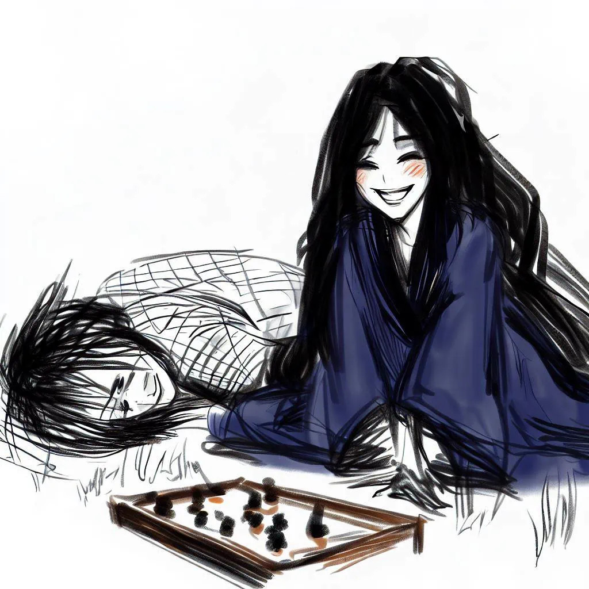
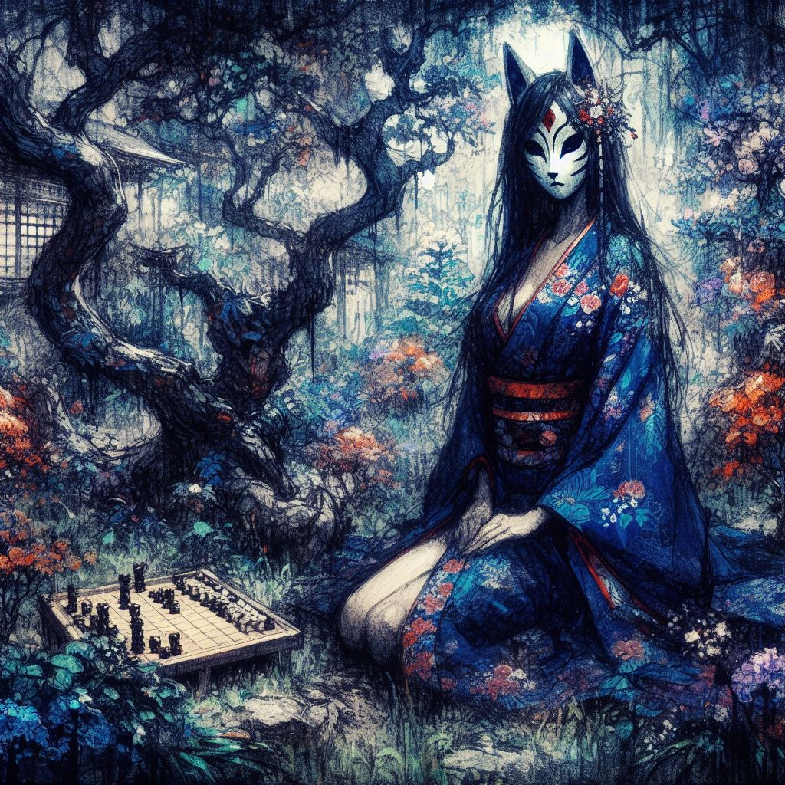

Le Souffle du Renard
Introduction
On raconte qu'au Japon, dans la région du Kansai, lorsque la pleine lune brille haut dans le ciel, une créature aux charmes ensorcelants fait son apparition, cherchant à attirer les passants égarés.
D'une beauté envoûtante, Komayō captive les infortunés par son charme mystérieux en leur suggérant de manière perfide une partie de ōgi, une variante du traditionnel jeu d'échecs japonais. Ceux qui acceptent son invitation se retrouvent emportés dans un labyrinthe de manœuvres et de stratégies.
Toutefois, à mesure que le jeu progresse, une lassitude insidieuse s'empare des joueurs, émoussant leur jugement et affaiblissant leur corps, les conduisant inévitablement vers un sommeil aussi profond qu'immuable.
C'est durant ce repos abyssal que Komayō dévoile sa véritable nature. Elle s'empare de leur énergie vitale, ne laissant derrière elle que l'écho vide de leur ancienne vigueur. Les âmes de ces victimes malheureuses se voient alors transformées en yūrei, et condamnées à une errance sans fin. Hantées par le souvenir envoûtant de Komayō et tourmentées par l'espoir vain de terminer leur partie de ōgi, elles errent éternellement, prisonnières d'une quête inachevée et d'un rêve déchu.

La Solitude de Yuki
Dans les ruelles pavées de Kyoto, sous l'ombre majestueuse des cerisiers en fleurs, se dressait la demeure de Yuki, épouse d'un noble servant le shogun. Ses journées s'écoulaient dans l'éclat silencieux des salles lambrissées, entourée des murmures feutrés de serviteurs et de courtisans. Mais, sous cette façade d'opulence et de grâce, se cachait un cœur solitaire.
Yuki aimait son mari avec une dévotion tendre et inflexible. Cependant, ses obligations auprès du shogun l'entraînaient souvent loin de la maison, la laissant seule, prisonnière de ses pensées et des murs qui semblaient se refermer sur elle. Elle errait dans les longs couloirs, son regard se perdant dans le vide, comme si elle cherchait une présence qui n'était jamais là.
Les jardins, autrefois source de joie et de sérénité, résonnaient désormais d'un silence mélancolique. Yuki passait des heures à contempler les koi qui glissaient sous les nénuphars du bassin, leurs mouvements lents et gracieux étant les seuls signes de vie dans son univers figé.
Chaque soir, elle s'asseyait près de la fenêtre, regardant la ville s'endormir sous un ciel étoilé. Les étoiles semblaient lui parler d'un monde lointain, un monde où elle pourrait être libre, loin de la solitude qui l'enveloppait.
Dans cette grande demeure, Yuki était admirée pour sa beauté qui défiait le temps, ses gestes gracieux et sa culture raffinée. Les courtisans, avec leurs sourires façonnés par l'envie et le désir, la courtisaient dans l'espoir de gagner ses faveurs ou une part de sa richesse. Mais leurs paroles mielleuses et leurs regards avides ne faisaient qu'accentuer son sentiment d'isolement.
La seule échappatoire de Yuki était son jardin secret, un petit coin de paradis où elle cultivait des fleurs rares et écrivait des poèmes, cherchant à capturer en vers la beauté éphémère des choses. Mais même là, entourée de la splendeur de la nature, la solitude était sa seule et fidèle compagne.
C'était dans cet état d'esprit que Yuki reçut un cadeau de son mari, un geste d'amour à distance qui allait bientôt transformer sa vie de manière inattendue.
Le Cadeau Mystérieux
Un matin, alors que la brume matinale enveloppait encore la ville de Kyoto de son voile mystérieux, un messager arriva à la demeure de Yuki. Il portait avec lui un colis, enveloppé avec soin dans un tissu de soie pourpre. Yuki, intriguée, accueillit le messager dans la salle de réception, où la lumière douce du jour naissant filtrait à travers les shōji.
Le messager s'inclina respectueusement et tendit le colis à Yuki. "Un cadeau de votre époux, ma dame," dit-il avec une déférence marquée. Yuki, les mains légèrement tremblantes d'anticipation, défit les liens de soie pour révéler un jeu d'ōgi magnifiquement ouvragé. Le bois ancien brillait d'une patine riche, témoignant de nombreuses années d'histoire et de mystère.
Accompagnant le jeu se trouvait une lettre de son mari. Yuki la parcourut rapidement, une lueur d'affection illuminant son visage. Dans la lettre, son mari expliquait avoir déniché ce jeu chez un marchand d'antiquités et exprimait son impatience à l'idée de partager des parties avec elle à son retour. Il décrivait le jeu comme un trésor, un lien entre eux malgré la distance.
Yuki caressa les pièces du jeu, émerveillée par la finesse de leur gravure. Elle n'avait jamais joué à l'ōgi auparavant, mais la curiosité l'emporta sur son hésitation. Elle appela l'une de ses servantes, une jeune femme aux yeux vifs et à l'esprit aiguisé, pour lui lire les règles du jeu.
Ensemble, elles s'assirent sur les tatamis, le plateau d'ōgi entre elles. La servante commença à expliquer les règles, sa voix douce et rythmée transformant chaque instruction en un conte fascinant. Yuki écoutait attentivement, absorbée par la complexité et l'élégance du jeu.
Au fur et à mesure que les règles lui étaient dévoilées, Yuki sentait une excitation naissante. Le jeu semblait offrir un monde de stratégie et de réflexion, un défi pour son esprit autrement inoccupé. Elle remercia la servante et passa le reste de la journée à s'exercer seule, déplaçant les pièces avec une concentration croissante.
Ce soir-là, Yuki s'endormit avec des pensées de stratégies et de mouvements tournant dans son esprit. Elle ne le savait pas encore, mais ce jeu allait bientôt devenir bien plus qu'un simple passe-temps.
Obsession Croissante
Au fil des jours, la fascination de Yuki pour le jeu d'ōgi ne fit que croître. Chaque matin, dès l'aube, elle se retrouvait assise en tailleur devant le plateau, les pièces alignées dans un ordre précis, comme si elles attendaient son toucher pour s'animer. Elle passait des heures à étudier chaque mouvement possible, envisageant les stratégies avec une intensité qui éclipsait tout le reste.
Les serviteurs de la maison commencèrent à chuchoter entre eux, intrigués et quelque peu inquiets de cette nouvelle passion de leur maîtresse. Yuki, qui autrefois prenait plaisir à leurs conversations et à leurs petites attentions, semblait désormais indifférente à tout ce qui n'était pas le jeu.
Les courtisans qui venaient lui rendre visite repartaient souvent déçus, leur présence à peine remarquée. Yuki était physiquement présente, mais son esprit était ailleurs, perdu dans les dédales infinis de l'ōgi.
L'après-midi, le jardin, autrefois son refuge, restait désert. Les fleurs qu'elle chérissait tant s'épanouissaient et fanissaient sans qu'elle ne leur accorde un regard. Ses poèmes, jadis écrits avec tant de soin et de passion, restaient inachevés, leurs mots perdus dans le silence de la maison.
La transformation de Yuki ne s'arrêta pas aux portes de sa demeure. La nuit, dans le monde des rêves, elle était hantée par des visions énigmatiques. Elle se voyait assise en face d'une silhouette mystérieuse, vêtue d'un kimono bleu nuit, le visage dissimulé derrière un masque de renard. Cette figure silencieuse, assise dans une clairière baignée de lumière lunaire, jouait avec elle au ōgi.
Chaque nuit, le rêve était le même. Yuki s'approchait de la femme masquée, s'asseyait en face d'elle et entamait une partie silencieuse. Il n'y avait pas de mots, seulement le cliquetis des pièces et le murmure du vent dans les branches. La connexion entre Yuki et cette étrangère semblait transcender les frontières de la réalité, laissant Yuki à la fois apaisée et troublée.
Au réveil, Yuki se sentait étrangement vidée, comme si une partie d'elle-même s'était attardée dans ce monde onirique. Elle remarqua bientôt que la disposition des pièces sur son ōgiban correspondait exactement à celle de ses parties dans le rêve. Cette coïncidence l'intrigua d'abord, puis l'obséda.
Le jeu, qui avait commencé comme un passe-temps innocent, était devenu une obsession étrange. Yuki ne pouvait s'empêcher de se demander si ces rêves étaient simplement le fruit de son imagination ou si quelque chose de plus profond et de plus mystérieux était à l'œuvre.
La Femme au Masque de Renard
La lune était pleine cette nuit-là, baignant la chambre de Yuki d'une lumière argentée. Elle s'endormit rapidement, épuisée par une journée passée à déchiffrer les mystères du jeu d'ōgi. Comme chaque nuit depuis l'arrivée du jeu, elle fut transportée dans le même rêve énigmatique.

Dans la clairière illuminée par la lune, la femme au masque de renard l'attendait, assise en silence, son kimono bleu nuit se fondant avec l'obscurité environnante. Le masque cachait son visage, mais Yuki pouvait sentir le regard intense de la femme posé sur elle. Elle s'approcha et s'assit, prête à entamer une nouvelle partie.
À mesure que les pièces se déplaçaient sur le plateau, Yuki sentait une connexion s'intensifier entre elle et la femme masquée. Chaque mouvement semblait porter en lui un message, une communication silencieuse qui transcendaient les mots. Yuki était fascinée par la grâce et la précision avec lesquelles la femme maniait les pièces, ses doigts effleurant le bois comme s'ils dansaient au rythme d'une musique inaudible.
Le jeu se poursuivait, complexe et captivant. Yuki était totalement absorbée, oubliant le monde réel, oubliant même qu'elle rêvait. Dans ces moments, elle ressentait une paix profonde, comme si elle avait trouvé une compagne d'âme dans cette figure énigmatique.
Cependant, une part d'elle-même restait troublée. Qui était cette femme ? Pourquoi lui apparaissait-elle nuit après nuit ? Yuki avait l'intuition qu'il y avait plus dans ces rêves qu'une simple figuration de son esprit. Elle se sentait irrésistiblement attirée par cette femme, comme si leur destin était d'une certaine manière lié.
À l'aube, Yuki se réveillait invariablement avec un sentiment de mélancolie. Les rêves semblaient plus réels que jamais, et la frontière entre le sommeil et la veille s'amenuisait. La femme au masque de renard occupait désormais ses pensées de jour comme de nuit.
La présence de cette femme dans ses rêves était à la fois apaisante et déconcertante. Elle était comme un fantôme bienveillant, guidant Yuki dans un monde onirique de mystère et de stratégie. Mais en même temps, Yuki ne pouvait s'empêcher de se sentir comme si elle était surveillée, évaluée par une force qu'elle ne pouvait ni voir ni comprendre.
Cette femme mystérieuse était-elle une création de son esprit, ou était-elle le signe de quelque chose de bien plus ancien et mystique ? Yuki ne le savait pas, mais elle était déterminée à trouver des réponses.
Réalité Altérée
À mesure que les jours passaient, l'emprise des rêves sur Yuki s'intensifiait. Elle se retrouvait souvent à errer sans but dans la maison, ses pensées perdues dans les méandres de ses nuits oniriques. Les serviteurs et les courtisans regardaient avec inquiétude cette transformation, mais Yuki était trop absorbée par ses rêves pour remarquer leur préoccupation.
La disposition des pièces sur le ōgiban, qui reflétait les mouvements de ses parties de rêve, devenait de plus en plus frappante. Chaque matin, Yuki se réveillait pour découvrir que la position finale des pièces dans son rêve était exactement la même que celle sur le plateau réel. Cette coïncidence dépassait l'entendement et alimentait son obsession.
L'état de Yuki se détériorait à vue d'œil. Ses nuits étaient agitées, remplies de rêves intenses et épuisants. Elle se levait chaque matin avec une fatigue accablante, ses yeux cernés trahissant les heures passées dans un sommeil qui ne lui offrait aucun repos. Les servantes murmuraient entre elles, se demandant si leur maîtresse était tombée sous le charme d'une malédiction ancienne.
Son mari lui manquait plus que jamais, mais son absence prolongée ne faisait qu'accentuer sa solitude. Yuki commençait à douter de la réalité qui l'entourait. La frontière entre le rêve et l'éveil devenait de plus en plus floue, laissant place à une confusion profonde.
Les jardins, jadis si chers à son cœur, étaient négligés. Les fleurs fanées et les feuilles mortes s'accumulaient, tandis que les oiseaux semblaient chanter des mélodies plus tristes. Yuki les écoutait, se demandant si le chant des oiseaux faisait partie de ses rêves ou de la réalité.
Les parties de ōgi dans ses rêves devenaient plus complexes, plus intenses. La femme au masque de renard semblait l'entraîner dans un tourbillon de stratégies et de mouvements qui la dépassaient. Yuki sentait que ces parties n'étaient pas de simples jeux, mais plutôt des énigmes qu'elle devait résoudre.
Malgré sa détresse croissante, Yuki ne pouvait s'empêcher de se sentir connectée à cette femme mystérieuse. Elle ressentait une sorte de familiarité avec elle, comme si elles se connaissaient depuis longtemps. Cette connexion, aussi irréelle qu'elle puisse paraître, était la seule source de réconfort dans sa vie tourmentée.
La malédiction, car c'est ainsi que Yuki commença à considérer ces événements, semblait prendre racine dans quelque chose de bien plus profond qu'un simple jeu. Elle était persuadée que la clé de son salut résidait dans la compréhension de ces rêves et dans le déchiffrement des mystères de la femme au masque de renard.
Le Retour du Mari
Le retour inattendu du mari de Yuki à la demeure familiale coïncida avec une soirée fraîche d'automne, où les feuilles des érables commençaient à se parer de teintes ardentes. Il franchit les portes de la maison avec une valise de souvenirs et le cœur lourd d'attentes, espérant retrouver l'harmonie et la sérénité qui régnaient avant son départ.
Cependant, ce qu'il découvrit en entrant dans la maison le laissa sans voix. Le désordre régnait dans les couloirs autrefois impeccables. Des tasses de thé vides s'entassaient sur les tables, et des vêtements étaient éparpillés çà et là, témoignant d'un quotidien désorganisé. La maison, jadis un havre de paix, semblait avoir perdu son âme.
Le mari appela Yuki, mais aucune réponse ne lui parvint. Guidé par une inquiétude croissante, il se dirigea vers leur chambre. Là, il trouva Yuki assise sur le tatami, son regard fixé sur le ōgiban posé devant elle. Ses cheveux, autrefois soigneusement coiffés, tombaient en désordre autour de son visage, et sa tenue, jadis élégante, était négligée.
S'agenouillant à ses côtés, il posa doucement sa main sur son épaule. Yuki sursauta, comme si elle revenait brusquement à la réalité. Ses yeux, cernés et vides, rencontraient les siens, révélant une profonde fatigue et une détresse qui lui serrèrent le cœur.
"Yuki, que s'est-il passé ?" demanda-t-il, sa voix empreinte de préoccupation.
Yuki leva les yeux vers lui, ses lèvres tremblantes essayant de former des mots. Sa voix, faible et hésitante, ne parvenait qu'à murmurer des syllabes incohérentes. Elle semblait être à la fois là et ailleurs, prisonnière d'une réalité que lui seul ne pouvait voir.
Le mari, désemparé, réalisa l'ampleur de l'épuisement qui consumait Yuki, aussi bien physique que psychique. La femme forte et rayonnante qu'il avait laissée il y avait quelques semaines semblait avoir été remplacée par une ombre de son ancien moi, hantée par un rêve ou une obsession qui la dépouillait peu à peu de son énergie et de sa sérénité.
Il resta à ses côtés, la soutenant de son mieux, tout en essayant de comprendre ce qui avait pu provoquer un tel changement. Les murmures des serviteurs lui parvinrent, évoquant des nuits d'insomnie, des heures passées devant le jeu d'ōgi, et des murmures sur une malédiction ancienne.
Le mari de Yuki, face à cette situation déroutante, savait qu'il devait agir rapidement pour sauver celle qu'il aimait. Il décida de chercher de l'aide extérieure, espérant trouver un moyen de ramener Yuki à la réalité et de la libérer de l'emprise de ce qui semblait être bien plus qu'un simple jeu.
L'Intervention du Moine
Conscient que la situation dépassait son entendement, le mari de Yuki fit appel à un moine exorciste, réputé pour sa sagesse et sa connaissance des esprits. Lorsque le moine arriva, le soleil commençait à décliner, plongeant la maison dans une lumière douce et mélancolique.
Le moine, un homme d'âge mûr aux yeux perçants, franchit le seuil de la demeure avec une aura de sérénité. Cependant, à peine eut-il pénétré dans le salon que son visage se crispa, trahissant une tension soudaine. Il s'assit dans un fauteuil, fermant les yeux pour se concentrer.
Après un moment, il rouvrit les yeux et se tourna vers le mari, son expression grave. "Il y a une présence ici," commença-t-il d'une voix basse. "Un esprit dénué de compassion et d'empathie. Il est proche, très proche. Ce n'est pas un esprit ordinaire. Il est stratégique, calculateur, et se nourrit de l'obsession et du désespoir."
Le mari écoutait, son cœur battant la chamade. "Comment pouvons-nous l'éloigner ?" demanda-t-il, l'angoisse perçant sa voix.
Le moine ferma à nouveau les yeux, inspirant profondément. "Ce plateau de jeu, le ōgiban, est le lien. Il faut le détruire pour briser l'emprise de l'esprit." Sa voix était ferme, sans la moindre hésitation.
Le mari hocha la tête, comprenant la gravité de la situation. "Je le ferai. Je brûlerai le plateau au temple dès ce soir," dit-il, déterminé à sauver sa femme de cette emprise maléfique.
Le moine se leva, prêt à partir. "Agissez vite," conseilla-t-il. "Et soyez prudent. Les esprits de ce genre ne se laissent pas chasser facilement."
Après le départ du moine, le mari se dirigea vers la chambre de Yuki. Il la trouva toujours plongée dans un état de transe, les yeux fixés sur le ōgiban. Avec une douceur infinie, il prit le plateau entre ses mains, sentant un frisson lui parcourir l'échine.
Le mari embrassa Yuki sur le front, lui promettant silencieusement de tout faire pour la libérer de ce cauchemar. Puis, emportant le plateau sous son bras, il quitta la maison. Le chemin vers le temple, éclairé seulement par la lueur vacillante des lanternes, lui semblait à la fois familier et étrangement menaçant.
La Décision du Mari
Alors que le crépuscule drapait Kyoto de ses teintes pourpres et or, le maître de maison s'engagea dans les ruelles sinueuses, le ōgiban fermement serré sous son bras. L'air frais du soir, chargé d'effluves de fleurs tardives, ne parvenait pas à apaiser son esprit troublé. Ses pas rapides résonnaient sur les pavés, chaque écho semblant porter la lourdeur de sa mission.
Il ne pouvait s'empêcher de jeter des regards furtifs derrière lui, son intuition lui suggérant une présence inquiétante, presque palpable, qui le suivait. À chaque coin de rue, chaque ombre projetée par les lanternes oscillantes semblait prendre vie, alimentant son anxiété croissante.
Les ruelles familières de Kyoto, qu'il avait arpentées tant de fois dans une tranquillité sereine, se transformaient en un labyrinthe oppressant, où chaque souffle de vent lui paraissait être le murmure d'une entité cachée. Le sentiment d'urgence qui l'animait se mêlait à une crainte diffuse, une appréhension de ce qui pourrait se tapir dans l'obscurité grandissante.
Le temple était encore à une bonne distance, chaque pas le rapprochant de son but tout en accentuant son sentiment de vulnérabilité. Le poids du ōgiban dans ses bras semblait s'alourdir à mesure qu'il progressait, comme si l'objet lui-même résistait à sa destruction imminente.
Les histoires et légendes qu'il avait entendues sur les esprits et les malédictions, autrefois lointaines et abstraites, prenaient désormais une tournure concrète et menaçante. Le mari comprenait que la bataille qu'il menait n'était pas seulement contre un objet maudit, mais contre une force obscure qui avait étendu ses racines dans le cœur et l'esprit de sa bien-aimée Yuki.
Ses pensées se tournaient vers elle, espérant que son action cette nuit-là serait suffisante pour briser l'emprise de la malédiction. Il se rappelait son sourire, sa grâce, tout ce qui faisait d'elle la femme qu'il aimait. Cette nostalgie lui donnait la force de continuer, malgré la peur et l'incertitude qui le tiraillaient.
Enfin, après un trajet qui lui parut durer une éternité, les contours familiers du temple apparurent, se dressant solennellement contre le ciel nocturne. Le maître de maison s'arrêta un instant, reprenant son souffle, puis franchit le seuil du temple, déterminé à mettre fin à la malédiction qui pesait sur Yuki.
La Nuit de Vérité
Soudain, une voix familière brisa le silence du soir, le faisant sursauter. "Maître ! Attendez, s'il vous plaît !" L'appel venait de sa servante, mais il lui fallut un instant pour la reconnaître dans la pénombre croissante. Elle était vêtue d'un kimono bleu nuit, qui ondulait au rythme de sa course précipitée, contrastant avec l'uniforme sobre qu'elle portait habituellement. Ses cheveux, normalement attachés en un chignon soigné, tombaient en une cascade lisse et brillante sur ses épaules, ajoutant une touche de mystère à son apparence.
Il s'arrêta, la regardant avec suspicion. "Que se passe-t-il ?" demanda-t-il, intrigué par ce changement soudain.
"Vous avez oublié les pièces du jeu d'ōgi," dit-elle essoufflée, lui tendant une petite boîte en bois finement ouvragée. Sa voix, mélodieuse et légèrement tremblante, se mêlait harmonieusement au bruissement de son kimono.
Il prit la boîte, son regard scrutant le visage de la servante, cherchant à y déceler une quelconque intention cachée. "Oui, c'est vrai. Merci de me l'avoir rappelé," répondit-il, tout en conservant une pointe de méfiance.
Repartant vers le temple, le maître de maison ne pouvait s'empêcher de penser à l'apparition inattendue de sa servante. Sa présence, à la fois familière et étrangement différente, avait éveillé en lui un sentiment d'étonnement mêlé de curiosité.
Arrivé à une intersection, il s'arrêta pour vérifier le contenu de la boîte. Comme elle l'avait dit, les pièces d'ōgi étaient bien là, disposées soigneusement à l'intérieur. Ce détail ajoutait à l'étrangeté de la situation.
Il se retourna instinctivement, sentant un regard posé sur lui. La silhouette de la servante, toujours drapée dans son élégant kimono, se tenait à une courte distance, l'observant s'éloigner. Elle s'approcha alors, courant légèrement, son allure empreinte d'une grâce inhabituelle.
Révélations de la Servante
Le maître de maison, guidé par la servante à travers les ruelles sombres de Kyoto, sentait son cœur battre au rythme de ses pas rapides. La servante, d'une voix empreinte d'émotion, partageait ses observations des nuits d'insomnie de Yuki, décrivant comment elle jouait au ōgi jusqu'à l'épuisement, perdant toute notion de temps et de réalité.
"Elle jouait toujours seule, maître, contre elle-même," expliqua la servante, sa voix teintée d'une inquiétude palpable. "Les parties étaient d'une rare beauté, mais toujours identiques, se terminant sur la même position, comme si elle était prise dans une boucle sans fin."
Le maître de maison l'écoutait attentivement, chaque mot ajoutant une couche de complexité à la situation déjà mystérieuse. La révélation que Yuki était piégée dans une répétition constante de la même partie de jeu accentuait son sentiment d'urgence.
Intrigué et troublé par ces informations, il s'arrêta, faisant face à la servante. "Pourriez-vous me montrer cette partie ?" demanda-t-il, espérant que comprendre cette séquence répétitive pourrait lui donner des indices sur la nature de la malédiction.
La servante hocha la tête, guidant le maître de maison vers un banc de pierre à l'écart, baigné par la lumière de la lune. Ils s'assirent, et elle déploya le plateau de jeu, disposant les pièces avec une précision qui trahissait sa familiarité avec cette configuration particulière.
Elle commença à déplacer les pièces, expliquant chaque mouvement, chaque stratégie que Yuki adoptait nuit après nuit dans ses parties solitaires. Le maître de maison suivait les mouvements, essayant de déceler un motif, un indice qui pourrait lui révéler la raison de cette obsession.
La partie se déroulait sous ses yeux, belle dans sa complexité, mais également mélancolique dans sa répétition. Chaque mouvement semblait chargé d'une signification plus profonde, comme si les pièces elles-mêmes racontaient l'histoire d'un esprit tourmenté cherchant désespérément une issue.
La Dernière Partie
Chaque mouvement était expliqué avec une habileté et une finesse qui captivaient le maître de maison. Il l'écoutait, absorbé par la complexité du jeu, ressentant un mélange étrange d'apaisement et de mélancolie. Il semblait que, dans ces mouvements, se trouvaient cachées des vérités plus profondes sur la condition de Yuki, sur son combat solitaire contre une malédiction invisible.
La servante s'arrêta subitement, pointant du doigt une position sur le plateau. "Voilà. C'est ici que votre femme perd ses parties," dit-elle d'une voix douce, empreinte d'une énigme non résolue. Elle esquissa un sourire énigmatique. "Bonne nuit, Maître."
Sa voix, lointaine et mélodieuse, semblait flotter dans l'air, portée par le vent nocturne. Le maître de maison sentit une lassitude insidieuse l'envahir, ses paupières devenant lourdes, son esprit s'embrouillant. Il ferma les yeux, s'abandonnant un instant à cette fatigue soudaine.
Le dernier souvenir qu'il eut avant de sombrer dans l'inconscience fut le visage flou de la servante et sa voix s'éloignant dans la nuit, mêlée aux gouttes de pluie qui commençaient à tomber doucement. Les gouttes s'écrasaient sur le sol, accompagnant la mélodie lointaine de la servante qui chantonnait une comptine.
Avec une tranquillité étonnante, elle remit soigneusement les pièces dans la boîte, enveloppant le plateau d'une étoffe de soie. Elle jeta un dernier regard au corps inanimé du maître, son expression insondable, avant de s'éloigner dans les ombres de la nuit, laissant derrière elle le mystère non résolu du ōgiban.
La pluie tombait désormais plus fort, lavant les rues de Kyoto de leurs secrets, tandis que Komayō disparaissait, sa silhouette se fondant dans le paysage nocturne, emportant avec elle les échos d'une malédiction ancienne.